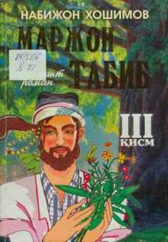

MTMarjon tabibning sarguzashtlari va hayotiy izlanishlari haqidagi qiziqarli roman.
Ushbu asar mashhur tabib Marjonning hayoti va uning insonlar dardiga darmon bo'lish yo'lidagi sarguzashtlari haqida hikoya qiladi. Roman muallifning tasavvuri va badiiy to'qimalari asosida yozilgan bo'lib, unda tabibning taqdiri va muhabbat tarixi bayon etiladi.